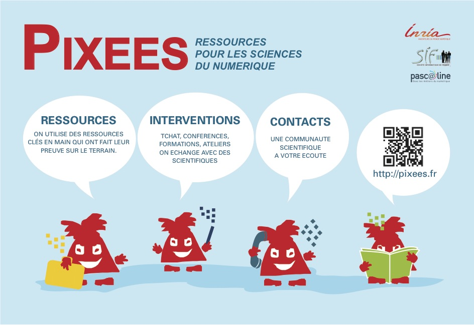

N'hésitez pas à aller jeter un coup d'oeil sur ces ressources... après le CC
Pour vous mettre sur la piste, voici un article écrit par Jeannette Wing en 2006, en V.O. ou V.F.
Une revue de culture scientifique en ligne proposée par des chercheurs pour explorer la science informatique, particulièrement intéressante pour des étudiants .
L'objectif de la revue est culturel avant tout. Il s'agit de créer un corpus de "savoirs en ligne". Ces documents, rédigés en français par des chercheurs, abordent des sujets variés, ils traitent de notions fondamentales comme de travaux et résultats de la recherche. Certains articles retracent l’itinéraire d’un scientifique, d’autres ouvrent un débat ou combattent une idée reçue. Les documents sont multimedia, avec des illustrations, des vidéos, des animations, des jeux sérieux, sans oublier les podcasts.
Le blog de la société informatique de France hébergé par Le Monde, à destination du grand public .
Le but est d’écrire ici pour des gens qui aiment lire, qui ont envie de réfléchir, et qui, même s’ils ne comprennent rien à l’informatique, aimeraient que cela change. Nous allons donc essayer d’expliquer les fondements scientifiques de l’informatique. Ainsi, vous ne trouverez pas dans binaire comment réparer votre imprimante ou choisir votre prochain ordinateur personnel. Nous essaierons, en revanche, de partager avec vous des trucs comme ce qui change avec le vote électronique, où ce que signifie l’informatique dans les nuages (le "cloud"), ou encore la datamasse (le "big data "). Nous vous montrerons aussi combien c'est fun et comment cela donne un vrai pouvoir sur le numérique que de savoir le programmer.
Nous sommes des scientifiques ou des professionnels du monde de la recherche qui partageons une vision résolument optimiste de la science et de la technique. Mais nous sommes tout sauf naïvement béats. Nous sommes parfaitement conscients des effets potentiellement dévastateurs des nouvelles technologies nées de l’informatique. Mais nous pensons que la société doit mieux comprendre l’informatique pour se saisir pleinement des problématiques nouvelles qui en découlent. Nous pensons aussi que si l’informatique est la cause de nouveaux problèmes, c’est souvent aussi l’élément clé de nouvelles solutions. Nous parlerons de tout cela.
Vous vous sentez une âme de passeurs de
sciences et vous voulez parler d'informatique à des
enfants, le site Pixees est
fait pour vous.

Il existe bien entendu bien d'autres liens intéressants. Vous voulez en suggérer un ? N'hésitez pas à nous envoyer un email.